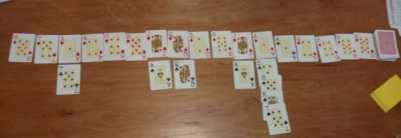

Juego de mesa donde los jugadores intentan encontrar cuál es la regla que rige la secuencia de cartas que se va desplegando. Las reglas de juego son muy simples; de modo que a partir de una breve descripción se está en condiciones de jugar.
Planilla para llevar el puntaje
